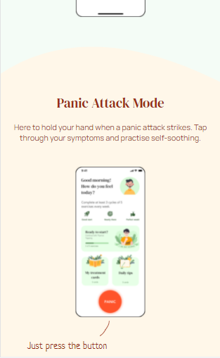

Design Principles Document
Austin Nelson
Repetition
DalaDala is a "contextual search tool that enlightens your work by unifying your team's collective knowledge." With the menu open as shown in the screenshot above, it's easy to see that the link that they want the viewer to focus on is the "request access" link. The element is repeated on the page itself, in the header, and in the drop down menu. The color, font style, font size, and general style are all repeated in each spot. This design principle helps the viewer immediately recognize that all three links will take you to the same spot and that this is the main link that you would use to start using the company's software. Overall, this design principle is one way that they improved the overall user experience.
Contrast
Healio For the next design principle, I found a website from Healio. Healio is a "self-treatment for mindfulness mental health and wellbeing" app.Throughout the website you can see that they list different techniques to help you with your mental health and general wellbeing. For the most part, the background color of the site is green. However, once you get to the section on panic attacks and the "panic attack mode" they switched the background color to a light pink. This contrast in design highlight this portion of the web page and puts a large emphasis on it. Even though it is a small section in the middle of the web page, the contrast in design shows that they put a lot of time into this feature and want it to be used to help people if a panic attack ever hits.
Hick's Law
LavaFor the last design principle, I found a website that is a good example of using Hick's Law. Lava is an app that "empowers you to record your conversations, share them with your followers, then add them to playlists." The sole purpose of their website is to advertise for the mobile application that they made. They make it easy for the viewer to recognize that through their simple and focused design. Their is only one link at the top of the page and it is one of the first things that the viewer notices because it is highlighted with a multi-color band. This follows Hick's Law by minimizing the choices available and highlighting the recommended options in order to improve the user experience.